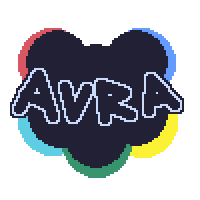
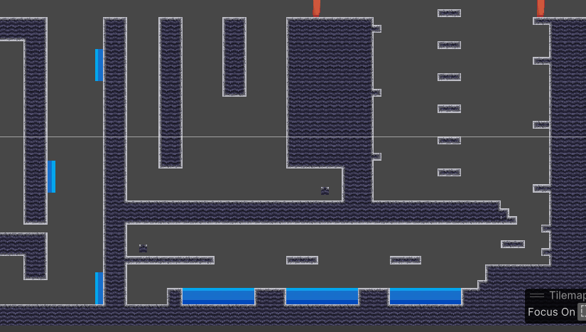

Semana 1 (2-8 de octubre)
En esta primera semana del proyecto hemos decidido el género del videojuego y el diseño del personaje principal.
Semana 2 (9-15 de octubre)
En esta segunda semana del proyecto hemos conseguido algunos bocetos de fondo de escenarios y hemos creado un porfolio. También hemos decidido las mecánicas básicas del juego como los "power ups" del personaje principal.
Semana 3 (16-22 de octubre)
En esta tercera semana del proyecto hemos implementado el menú de inicio y las macánicas básicas en el juego. También hemos puesto a punto el prfolio y algunas cosas más que se verán en un futuro.
Semana 4 (23-29 de octubre)
En esta cuarta semana del proyecto hemos arreglado pequeños fallos que hemos ido encontrando en el prototipo, y se han repartido las distintas partes del juego como por ejemplo las animaciones, el diseño de nivel, etc
Semanas 5 y 6 (30 de octubre - 12 de noviembre)
En este periodo un poco más largo de tiempo se han diseñado todos los niveles y se han implementado en unity, y al ismo timepo se han creado las distintas animaciones del personaje, los fondos de los escenarios, etc.
Semanas 7 (13-19 de noviembre)
En esta última semana antes de mostararos la beta del juego se ha dedicado a unificar en un solo proyecto todo el trabajo de las dos semanas anteriores.